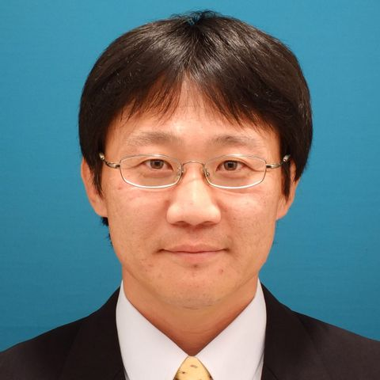
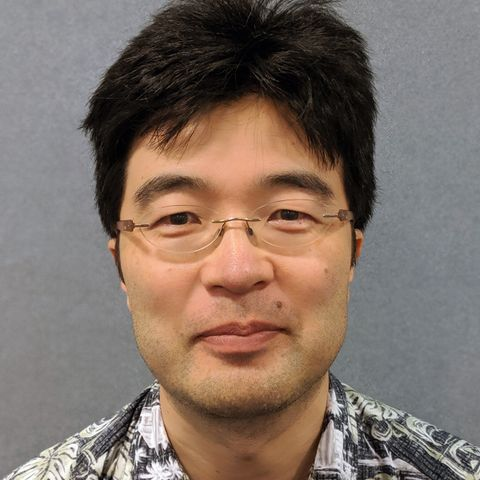
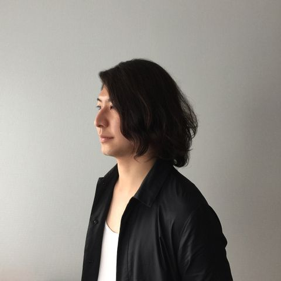

WISS委員一覧
WISS 2020実行委員
プログラム委員長
- 寺田 努 [web]
- 所属：神戸大学
- 専門：ウェアラブルコンピューティング，エンタテインメントコンピューティング，情報提示
実行委員長
- 五十嵐 悠紀 [web]
- 所属：明治大学
- 専門：コンピュータグラフィックス，ファブリケーション

副実行委員長
- 真鍋 宏幸 [web]
- 所属：芝浦工業大学
- 専門：入出力デバイス，ファブリケーション
会計
細部 博史，瀬川 典久
出版・デザインコンペ
池松 香，加藤 邦拓
広報・学会リエゾン
佃 洸摂，横窪 安奈
WISSチャレンジ
入江 英嗣
チャット
福地 健太郎
動画生中継
阪口 紗季
デモ・ポスター
村尾 和哉，土田 修平
ネットワーク
原 貴洋，奥本 隼
照明・音響
川口 一画
Web・投票・サーバー
小山 裕己，福里 司
懇親会
簗瀬 洋平，倉本 到
表彰
沖 真帆，宮下 芳明
企業スポンサー
岩本 拓也，開原 沙文
参加者管理
樋口 啓太
学生ボランティア
櫻井 翔，中野 倫靖
WISS 2020プログラム委員
五十嵐 悠紀 [web]
- 所属：明治大学
- 専門：コンピュータグラフィックス，ファブリケーション
池松 香 [web]
- 所属：ヤフー株式会社，東北大学
- 専門：ヒューマンコンピュータインタラクション（HCI），タンジブルユーザインタフェース（TUI）
入江 英嗣
- 所属：東京大学
- 専門：

岩本 拓也
- 所属：サイバーエージェント
- 専門：
沖 真帆
- 所属：はこだて未来大
- 専門：ヒューマンコンピュータインタラクション（HCI），ファブリケーション
奥本 隼
- 所属：TwoGate
- 専門：
開原 沙文
- 所属：チームラボ
- 専門：

梶本 裕之
- 所属：電気通信大学
- 専門：ハプティクス，バーチャルリアリティ
加藤 邦拓 [web]
- 所属：東京工科大学
- 専門：ヒューマンコンピュータインタラクション（HCI），ファブリケーション
川口 一画
- 所属：筑波大
- 専門：
倉本 到 [web]
- 所属：福知山公立大学
- 専門：エンタテインメントコンピューティング，HAI/HRI，HCI
栗原 一貴 [web]
- 所属：津田塾大学，クーリード株式会社
- 専門：ヒューマンコンピュータインタラクション（HCI），エンタテインメントコンピューティング
小池 英樹
- 所属：東工大
- 専門：
小山 裕己 [web]
- 所属：産業技術総合研究所
- 専門：コンピュータグラフィクス，デザイン支援，最適化計算
阪口 紗季 [web]
- 所属：東京大学
- 専門：エンタテインメントコンピューティング，ワークショップ，情報提示
櫻井 翔
- 所属：電通大
- 専門：
瀬川 典久
- 所属：京産大
- 専門：
塚田 浩二
- 所属：お茶大
- 専門：
佃 洸摂 [web]
- 所属：産業技術総合研究所
- 専門：情報推薦，情報検索，Webマイニング
土田 修平 [web]
- 所属：神戸大学
- 専門：ダンス情報処理，エンタテインメントコンピューティング
寺田 努 [web]
- 所属：神戸大学
- 専門：ウェアラブルコンピューティング，エンタテインメントコンピューティング，情報提示
中野 倫靖 [web]
- 所属：産業技術総合研究所
- 専門：歌声情報処理

鳴海 紘也 [web]
- 所属：東京大学
- 専門：形状変化インタフェース，ソフトロボティクス，デジタルファブリケーション
原 貴洋
- 所属：ヤマハ株式会社
- 専門：ネットワーク，リアルタイムオーディオ通信
樋口 啓太 [web]
- 所属：Preferred Networks，醸燻酒類研究所
- 専門：ヒューマンコンピュータインタラクション，Computer Vision for HCI，HCI for Machine Learning
福里 司
- 所属：東大
- 専門：
福地 健太郎
- 所属：明治大
- 専門：
細部 博史
- 所属：法政大
- 専門：
真鍋 宏幸 [web]
- 所属：芝浦工業大学
- 専門：入出力デバイス，ファブリケーション
宮下 芳明 [web]
- 所属：明治大学
- 専門：HCI全般，味覚メディア
村尾 和哉 [web]
- 所属：立命館大学
- 専門：ウェアラブル・ユビキタス，人間行動認識，ユーザインタフェース
簗瀬 洋平
- 所属：Unity
- 専門：
横窪 安奈
- 所属：青学大
- 専門：